Site Report
Introduction
his site aims at displaying my individually designed portfolio site constructed utilizing HTML & CSS skills acquired during the Web Development Module, CSY1063. This site illustrates foundation skills in front end development, which involve semantic HTML markup, design, CSS, device responsiveness, & basic interaction skills based on hover effects. This report will highlight my learning process, my design choices, technological implementation, the difficulties encountered during site creation, & the use of validation & versioning.
Learning Experience and Development Process
Throughout this project, I developed a stronger understanding of semantic HTML and the importance of using correct elements such as nav, main, section and footer instead of generic div tags. Initially, structuring layouts and managing spacing across different screen sizes was challenging, but regular testing using browser developer tools helped me understand how CSS properties interact.
My knowledge of CSS improved significantly, particularly in using Flexbox and Grid for layout control, implementing transitions for hover effects, and applying media queries for responsive design. I also gained practical experience using Git and GitHub for version control. Making regular commits over multiple dates helped me track progress, fix mistakes, and refine features incrementally rather than making large changes all at once.
User Interface and Design Choices
The site has a modern and professional appearance suitable for a computer science portfolio. This has been achieved through the use of a dark blue color scheme along with gradient backgrounds. The text colors have been selected in a way that ensures there is sufficient contrast. This has been achieved through the use of lighter text colors. Web-safe fonts, such as Tahoma and Arial, have been used.
The wireframes for each page of the site on both desktop and mobile had been created beforehand. This helped to ensure a standardized layout on each page. A visual hierarchy was established by varying the use of font sizes and spaces, and the presence of interactivity was indicated by the use of hover effects on project and navigation links.
Home Page
The home page introduces the purpose of the site and provides a brief personal introduction. The layout uses Flexbox to align content and adapts responsively on smaller screens.
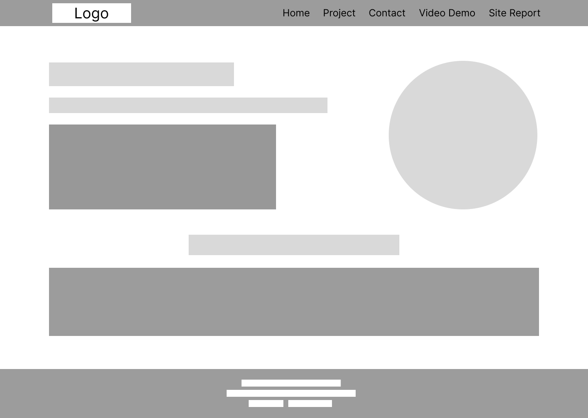
Project page
The project page uses CSS Grid to display project cards in a structured layout on desktop screens, transitioning to a single-column layout on mobile devices. Hover effects are applied to improve user feedback.
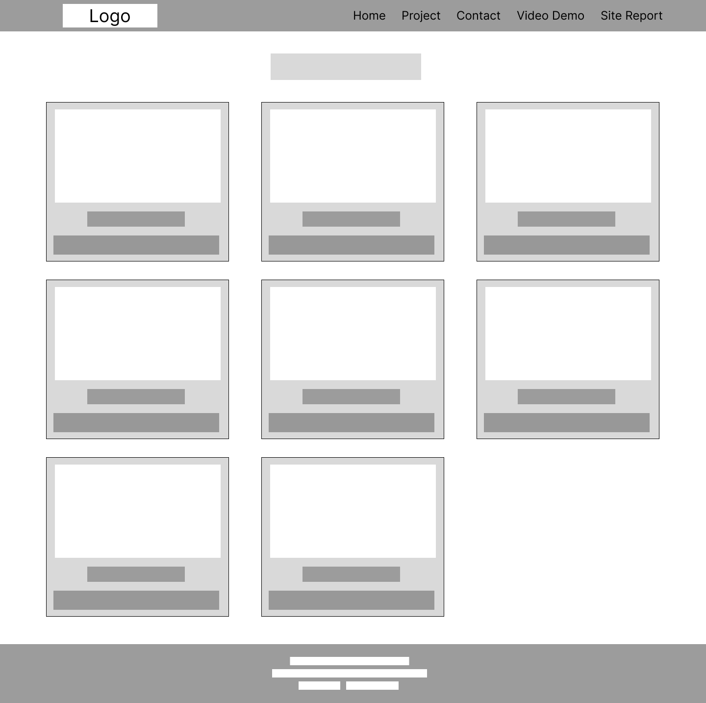
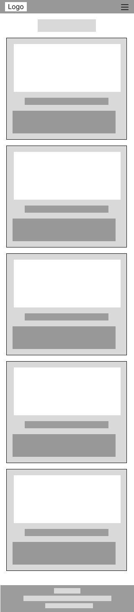
contact Page
The contact page provides contact information and a form that opens the user’s email client, as required by the module brie
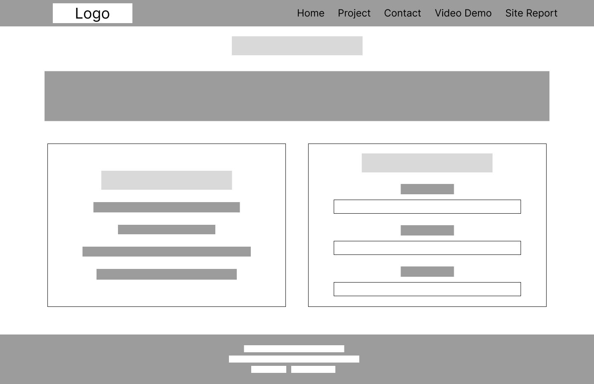
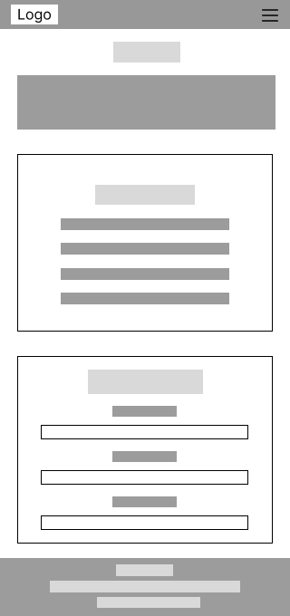
Video Demo Page
This page contains an embedded video demonstration explaining the structure, layout, and responsive features of the website.
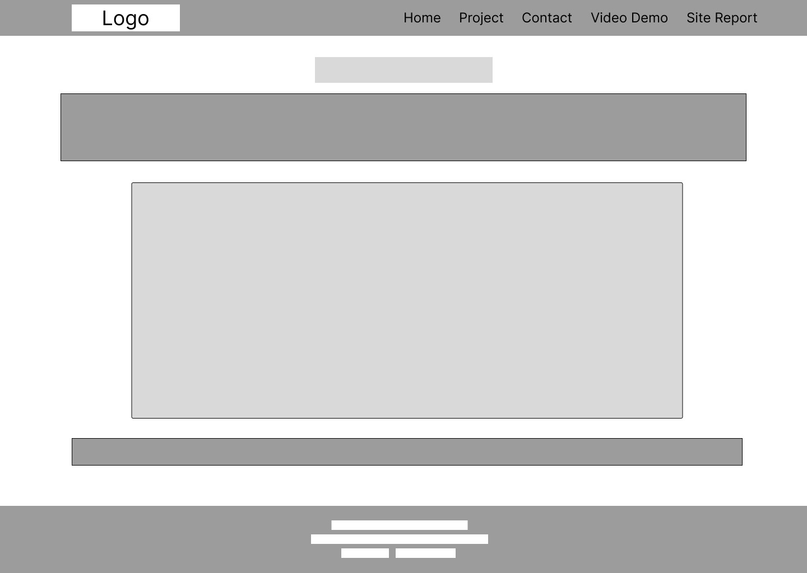
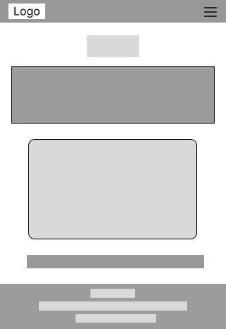
Site Report Page
The site report page documents the development process, reflections, and technical decisions made during the project.
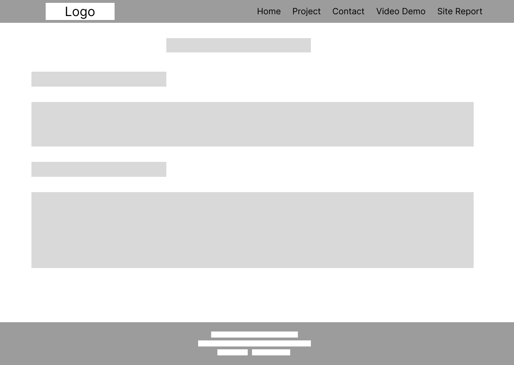
Technical implementation
Each page employs a uniform navigational bar, as well as a footer, which helps create consistency in appearance. Flexbox layout has been applied in the alignment processes related to navigation, hero sections, and contact pages. CSS Grid, however, has been used on the projects page. The responsiveness strategy has been achieved through the employment of media queries, which target screens less than or equal to 768px. The hamburger menu navigational system is only visible on mobile devices.
Validation and Standards Compliance
All HTML and CSS files were validated using the W3C HTML and CSS validation tools. Screenshots of validation reports for each page are included below to demonstrate compliance with web standards.
Validation Screenshots
index.html Page
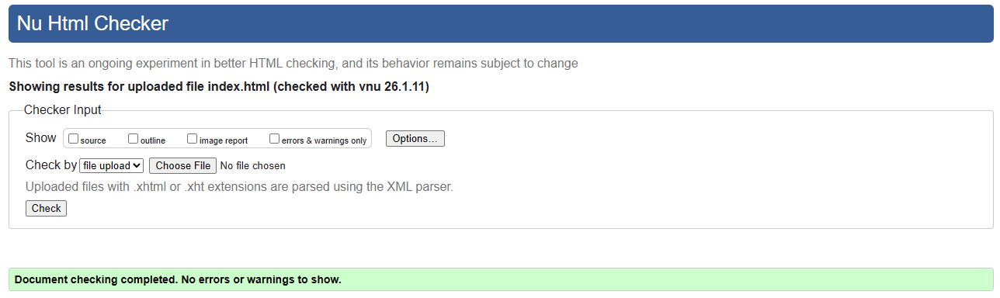
project.html Page
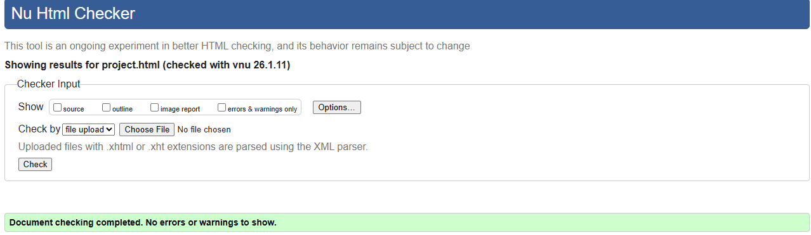
contact.html Page
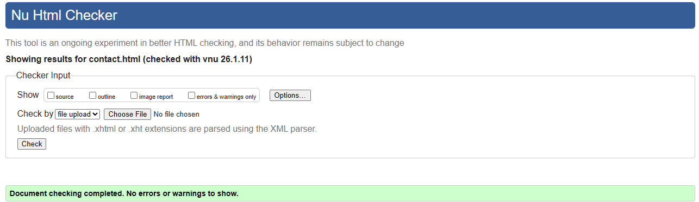
videoDemo.html Page
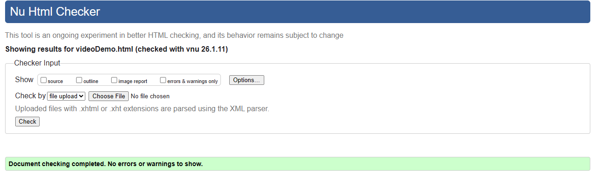
sitereport.html Page
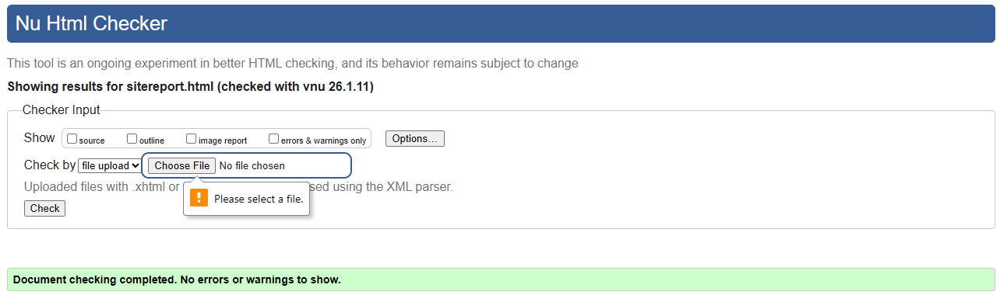
Conclusion
To me, this portfolio site is the epitome of learning that has occurred in the CSY1063 Web Development module. By creating and constructing numerous pages, and using CSS Grid and Flexbox, I was able to learn through practical means the concepts of front-end web development. The issues that arose, for example, when creating a site that is truly and uniformly responsive, or when attempting to center information, and when checking for proper coding, were useful experiences that improved problem-solving and coding skills. The use of GitHub versioning has further emphasized the need for proper and organized project flow.
Video Link: youtu.be/Dfty_yc0n_M?si=W7PW3dgC720xe9u4